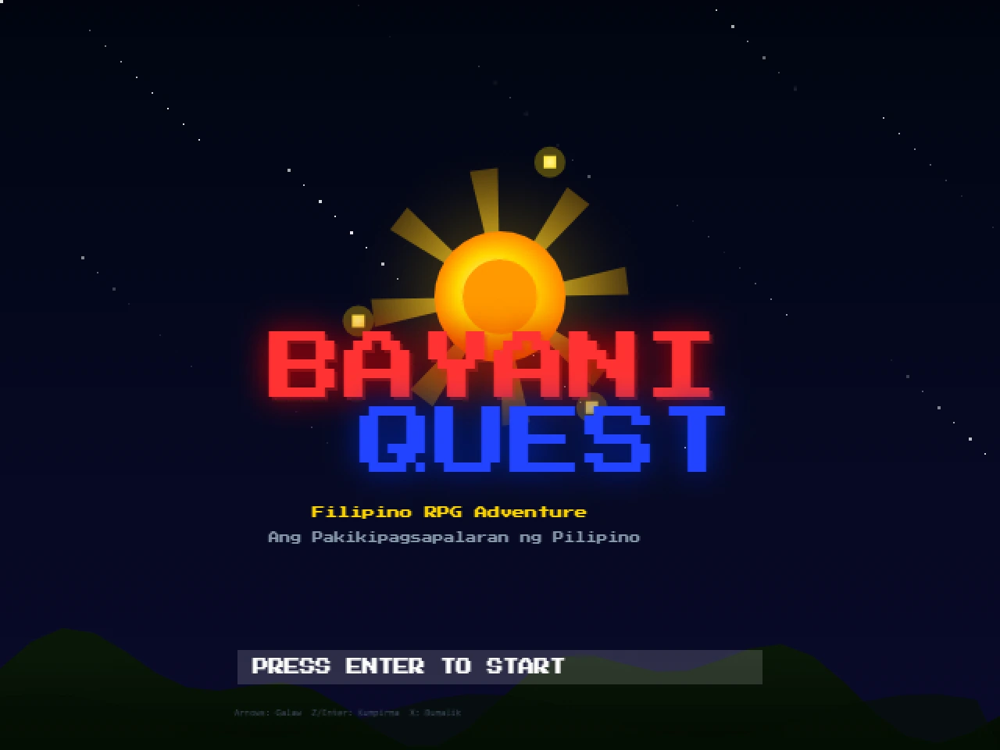
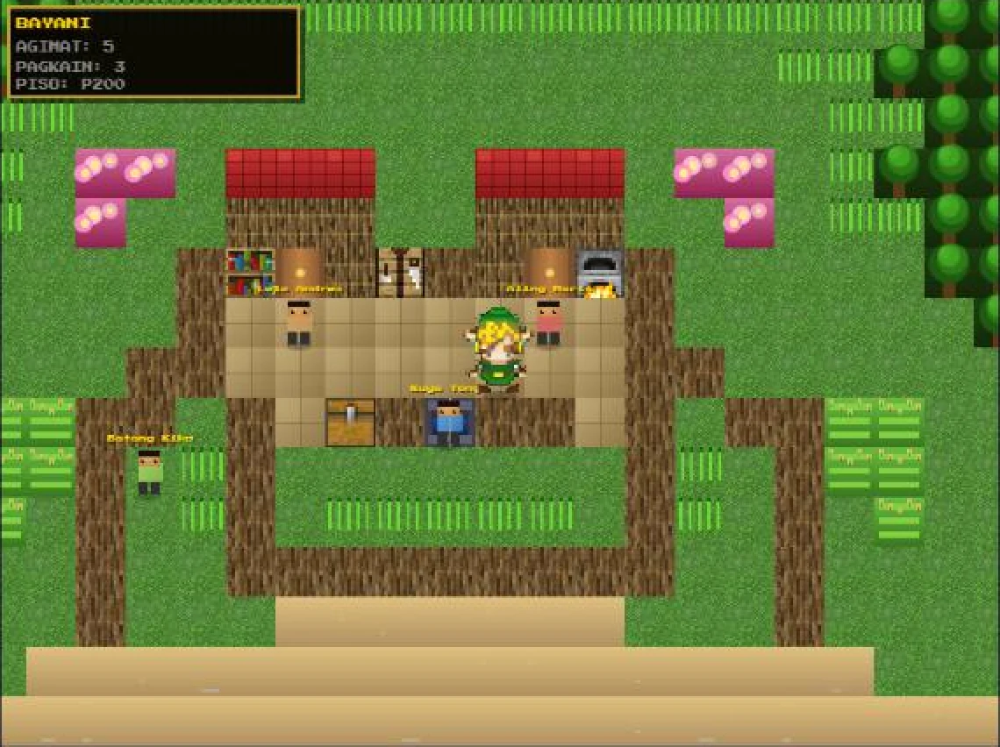
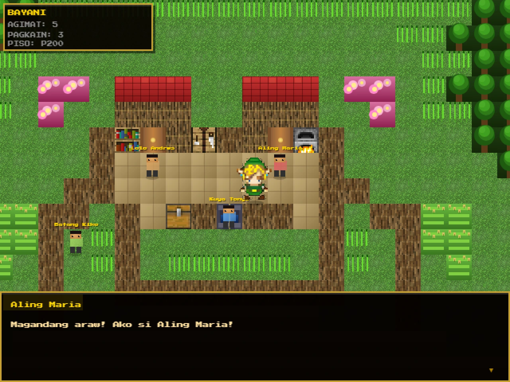
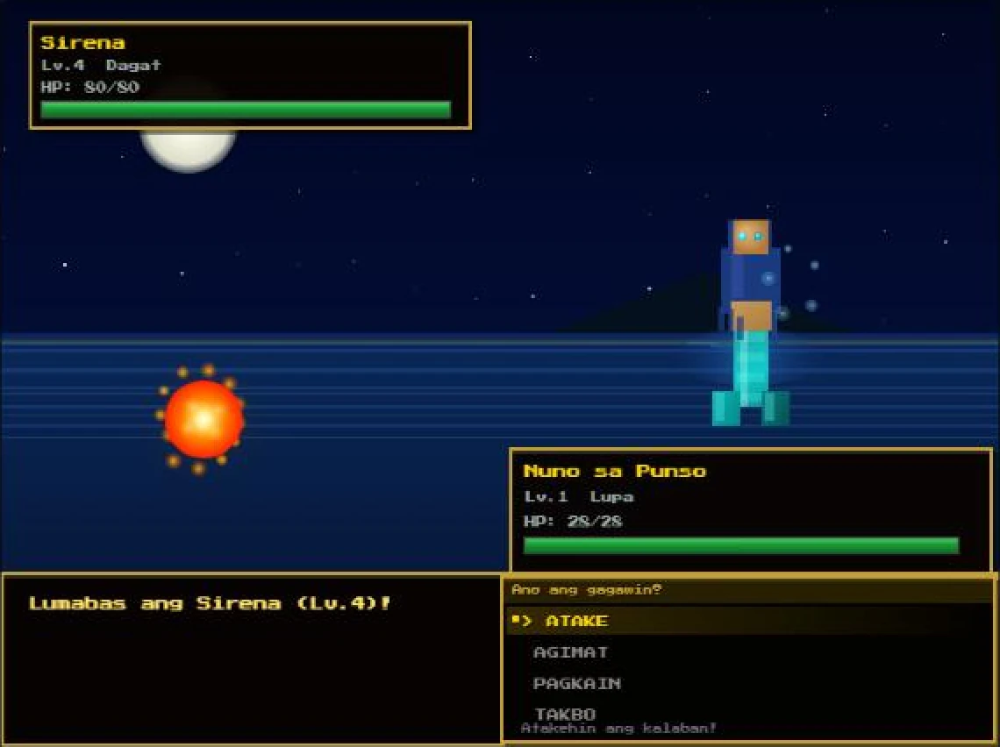

Work Bayani Quest
Game
Bayani Quest
A Filipino folklore RPG in the browser: explore a barangay, catch mythical creatures and battle them, all drawn on an HTML5 canvas.

Overview
Bayani Quest (“bayani” means hero) is a top-down role-playing game inspired by Filipino folklore, played in Filipino. You explore Barangay Maliwanag, talk to villagers, and venture into tall grass and rice fields where creatures from Philippine myth (nilalang) appear: the Tikbalang, Diwata, Nuno sa Punso, Kapre, Santelmo and Sirena.
The whole game is a single HTML file and runs on a 640 × 480 canvas with crisp pixel-art rendering. Walking, wandering encounters, dialogue, shopping and turn-based battles are all written in plain JavaScript with no game engine.
Highlights
- Top-down village and field map with tile textures for grass, sea, wood, lava, a stove, a chest and bookshelves.
- Animated player character with front, back, left and right frames, including a ten-frame walking cycle.
- Random encounters that depend on the terrain: tall grass is the most dangerous, then rice fields, then open grass.
- Six folklore creatures, each with its own type, stats, moves and a description of the myth behind it.
- Turn-based battles with attack, throw an agimat charm to catch the creature, use food to heal, or run away. A party of up to three catches.
- Villagers with typed-out dialogue: a healer who restores your party, a shopkeeper selling agimat and food, a guide and a gossiping child.
- Battle backdrops drawn in code for a night forest, an ocean at night and a lava crater, matching each creature’s habitat.
- Arrow keys to move, Z or Enter to confirm and talk, X to go back.
More from this project


